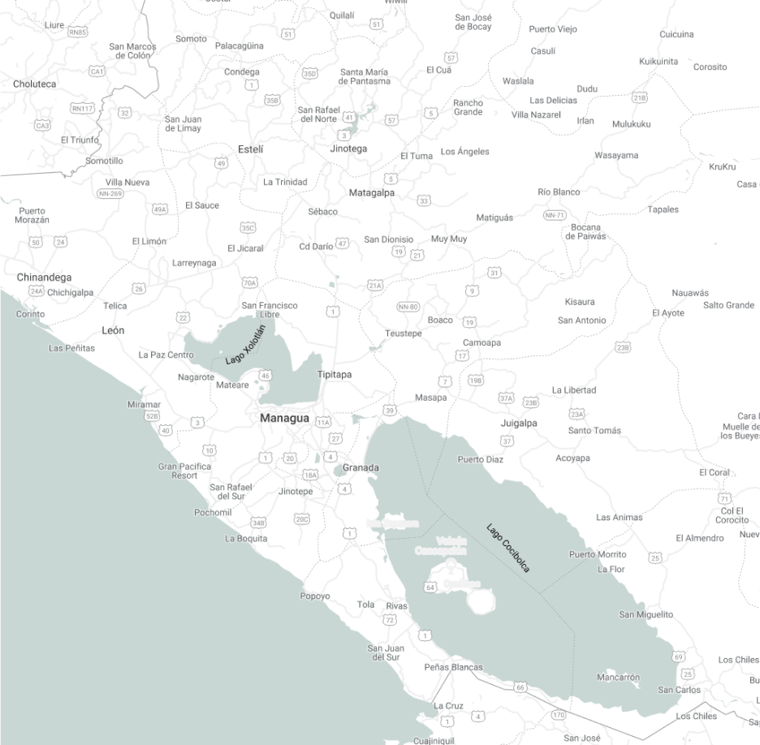

{% extends "base.html" %}
{% from 'macros/menu.html' import Menu %}

{% block content %}
    <div class="layout layout-has-sider">
        <aside class="layout-sider bg-white">
            {{Menu(menu, 'lugar')}}
        </aside>
        <div class="layout">
            <header class="layout-header" id="header">
                {% include "partials/header.html" %}
            </header>
            <div class="layout layout-has-sider">
                <aside class="layout-sider">
                    {% include "partials/UbicationForm.html" %}
                </aside>
                <main class="layout-content">
                    
                </main>
            </div>
        </div>
    </div>
{% endblock %}